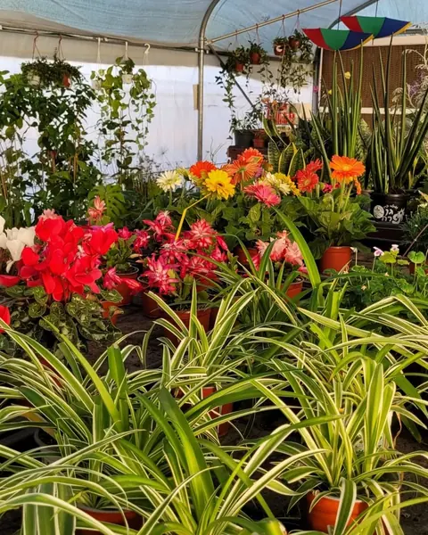

- דף הבית
- מדריכים
מדריכים לגינה ולבית
תשובות פשוטות לשאלות שהכי שואלים אותנו במשתלה: איך שומרים על סחלב, מה שותלים עכשיו, איזה צמח שורד מרפסת דרומית וכמה בעצם צריך להשקות.
 צמחי בית
צמחי ביתצמחי בית קלים לגידול: 8 צמחים שכמעט אי אפשר להרוג
שוכחים להשקות? יש לכם פינה חשוכה? אלה הצמחים שיסתדרו גם בלי ניסיון.
לקריאה צמחים פורחים
צמחים פורחיםאיך לטפל בסחלב בבית ולגרום לו לפרוח שוב
השקיה, אור ומה עושים כשהפרחים נושרים, כדי שהסחלב יפרח גם בשנה הבאה.
לקריאה לפי עונה
לפי עונהמה שותלים בסתיו ובחורף? פרחי עונה לגינה ולמרפסת
לוע הארי, רקפות, ציפורנים ואמנון ותמר: הפרחים שאוהבים את החורף הישראלי.
לקריאה מרפסת וגינה
מרפסת וגינהפרחים למרפסת שמש: מה שורד את הקיץ הישראלי
מרפסת דרומית שקופחת? הצמחים האלה דווקא אוהבים את זה.
לקריאה טיפול
טיפולכמה להשקות עציץ? מדריך השקיה פשוט לצמחי בית ולמרפסת
הסיבה הנפוצה ביותר לצמח שמת היא דווקא יותר מדי מים. ככה יודעים מתי להשקות.
לקריאה מתנות
מתנותצמח במתנה: איך לבחור עציץ למארחים, לחג ולט״ו בשבט
מתנה שממשיכה לגדול. איך בוחרים צמח לפי מי שמקבל אותו.
לקריאה
ביקור במשתלהמשתלה בגן יבנה ליד עגלת הקפה אוליבר: איך מגיעים ומה מחכה לכם
כתובת, ניווט בוויז, חניה, שעות פתיחה וקפה צמוד. כל מה שצריך לדעת לפני שמגיעים.
לקריאה